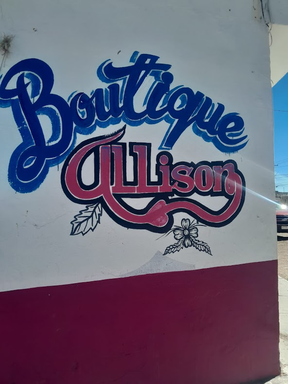
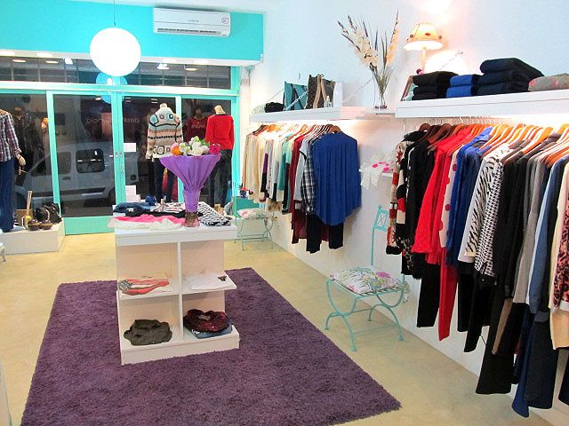

Toda la historia a cerca de este negocio surgió desde el año 2023, cuando la ahora propietaria Allison fausto decidió empezar a vender ropa infantil y de todo tipo, pero su venta era a domicilio. Ella salía todas las tardes con su carro a cada una de las casas de sus conocidas a ofrecerles ropa, con modelos que antes en durango no se habían visto. Tiempo después, la empresaria decidió fundar su tienda, esto con el motivo de que su clientela ya era demasiada y ya no podía cubrir todas las necesidades. Es por esto se decidió establecer en la ciudad su tienda. La idea de emprender este negocio, era ya con estrategias más fundamentadas, donde ella considero que su ventaja competitiva principal sería el tipo de marcas de ropa infantil que manejaba, además de que ofrecería aspectos que otros negocios similares no tenían. Así, un poco más convencida de que había tomado una decisión buena y había hecho una elección convincente, al paso de los meses se fue evaluando el comportamiento de las ventas de su primer tienda y de acuerdo al número de clientes ,para con ello propiciar más ventas y publicidad, y poder en un futuro extenderse a nivel estatal.
|  |  |
Ser la primer opción en el mercado , ofreciendo productos de excelencia, calidad y vanguardia en moda, incrementado en valor de la organización e implementar estrategias para nuevos posicionamientos en los inicios del 2023
| |
Pantalones de tipo RECTO o Straight. ... Pantalones HIGH WAIST o high rise. ... Pantalones WIDE LEG. ... Pantalones de tipo PITILLO o Skinny. ... Pantalones SLIM o Slim fit. ... Pantalones CIGARETTE. ... Pantalones ACAMPANADOS o flare. ... Pantalones CROPPED. | |
Off-shoulder. ... Transparencias. ... Camisas en colores neutros. ... Cuello de tortuga. ... Blusa de encaje. ... Cuello en V.Top top. |
| |
Vestido cruzado. Vestido recto. Vestido camisero. Vestido tipo tubo. Vestido de corte imperio. Vestido cuello Peter Pan. Vestido evasé Vestido tipo túnica. |
| |
Floral. La mayoría de las fragancias femeninas contienen notas florales, y muchas fragancias para hombre también contienen un toque floral. ... Frutal. Verde. Aromátic Fougèr Cítrico Chipre Amaderado. |
Crecer la cadena de tiendas para el año 2024, en el estado de DURANGO. · Incrementar las ventas un 30% al finalizar el año 2024 en la tienda . · Incrementar un 20% las ventas en la segunda tienda al finalizar el año 2024. Vender ropa para toda la familia